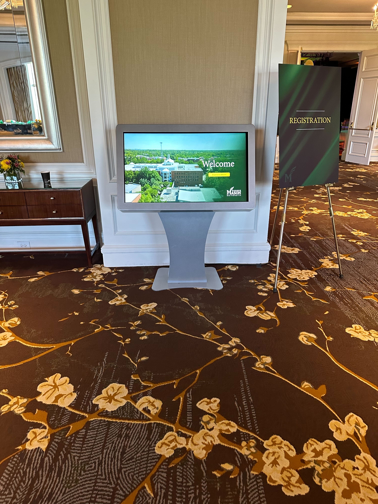
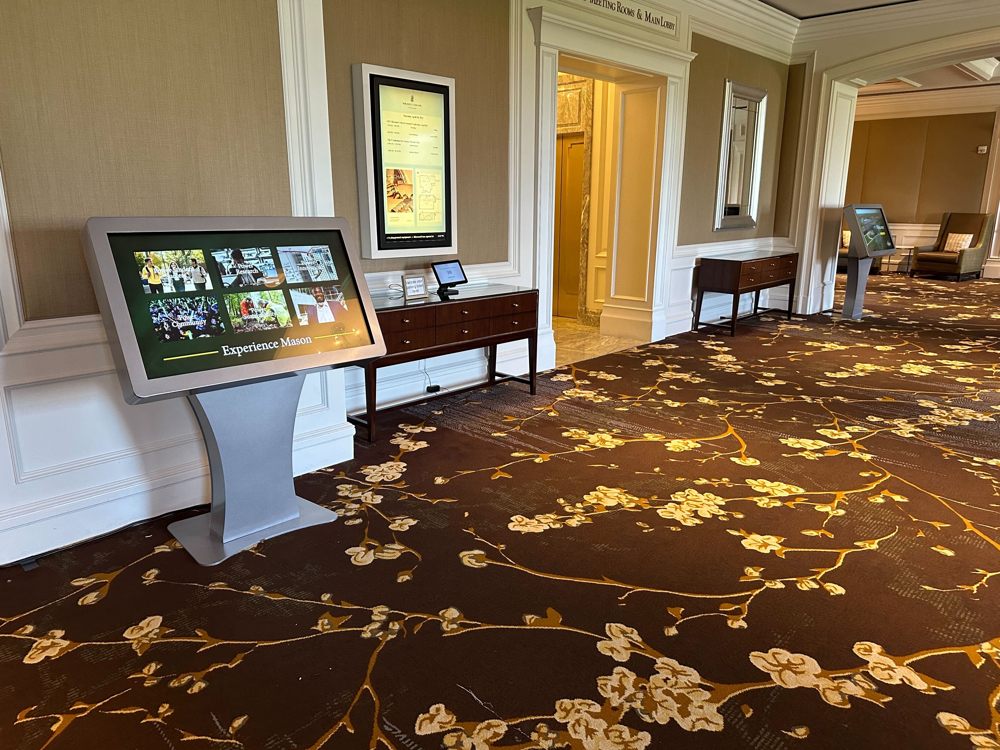
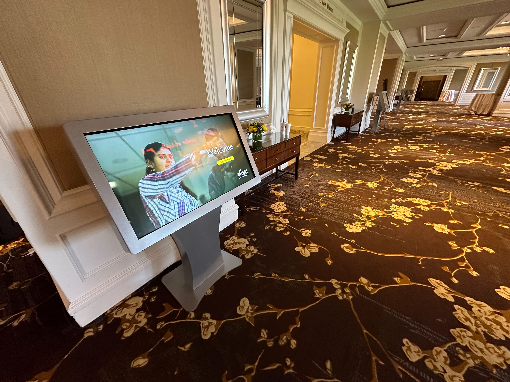

George Mason University
In collaboration with George Mason University, I developed a visually engaging, touchscreen interactive solution for their fundraising event. Building upon my previous experience and the established kiosk workflow from the Yale project, I tailored the interactive kiosk to facilitate donor navigation through the various campaigns being presented during the fundraiser. Utilizing Ventuz 6.12 for programming, I ensured a user-friendly and visually appealing experience. The kiosk was powered by the same custom hardware solution, providing reliable performance without the need for on-site service.
Responsibilities
- Creating dynamic graphic templates for live operators to use during live shows
- Ensuring templates were configured for user-friendly interaction with Ventuz Director
- Collaborating with the production team to ensure smooth integration of graphics during broadcasts
- Debugging and optimizing graphics performance for real-time rendering
Technologies Used
- Ventuz 6.12 Designer
- Custom hardware
- Touchscreen Kiosk
Gallery


